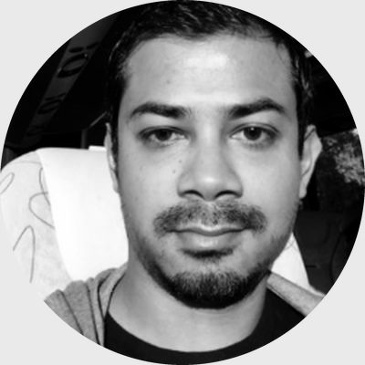

Founder & CEORedwan Rashid
AI Scientist at Zoox, an Amazon company.
LeadsAI pre-costing, SAM from video and the agents.
Three people, three disciplines: applied AI, fifteen years of lean, IE and planning, and industrial engineering research at BUET.

Founder & CEOAI Scientist at Zoox, an Amazon company.
LeadsAI pre-costing, SAM from video and the agents.
BSc, Industrial & Production Engineering. Fifteen years in lean, IE and planning.
LeadsLine balancing, planning dashboards and on-site rollout.
Professor of Industrial Engineering, Bangladesh University of Engineering and Technology (BUET). IE consultant.
Advises onMethod and measurement: time study and line balancing.
Every agent we build follows the same loop. A person approves the result before it leaves the factory.
Cost sheets, tech packs, plans or video.
A quote, a set of times, a plan or a report.
The draft is compared with your past styles and results.
Unusual lines are marked for a person to look at.
Then it goes out. Anything else goes back with notes.
We look at your own data first. Which styles made money?
One product family or one line.
The tool runs in your team's daily routine.
Check-ins at 30, 60 and 90 days.
Remote-first, on-site during Bangladesh visits.